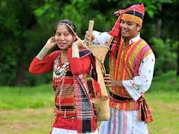

Famous & Local Food of Tripura Traditionally, meat eaters, a typical Tripura platter would include rice, pulses, vegetables, chutney as well as fish and meat. Tripura's cuisine, known as 'Mui Borok' to its locals, right to the nature of preparations in North-East, is mild, organic, zesty with subtle yet distinct and aromatic herbs and spices. The food in Tripura derives its elements and flavours from the sections of Muslims, Bengalis and the tribal groups that call it home.
One of the most exciting things about the Tripuri platter is the fact that there is minimal use of oil and herbs which makes it extremely healthy. Also while rice, fish and other non-vegetarian delicacies might dominate the platter, equally delicious options for vegetarians are available. Berma which is a preparation of dry and fermented fish is almost defining to Tripura's menu.
So are the varieties of Chakhwi, Champrai, Gudok, Khalok, Kasoi Mwkhwi, Panch Phoron Tarkaari, Wahan Mosdeng and more. Fish stews and dishes of bamboo shoots are also popular and almost staple. Also, a flattering number of options from Chinese cuisine and a milder and less spicy version of Bengali cuisine are standouts of the state's cuisine.
The traditional dress of Nagaland is Li. This style of dressing has numerous patterns and designs, especially embroidered. They wear a phanek below the waist, which is similar to a low skirt. Mechala is the common upper wear. It is a wraparound shirt.The shawls of the dress have more work done to it. The shawls of grand work are worn by people of higher class. Usually, the designs are geometric shapes and floral patterns.